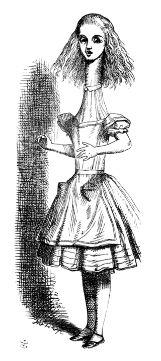

Chapter 1: Down the Rabbit Hole
Alice was beginning to get very tired of sitting by her sister on the bank, and of having nothing to do...

Chapter 2: The Pool of Tears
"Curiouser and curiouser!" cried Alice...
Chapter 3: A Caucus-Race and a Long Tale
They were indeed a queer-looking party that assembled on the bank...